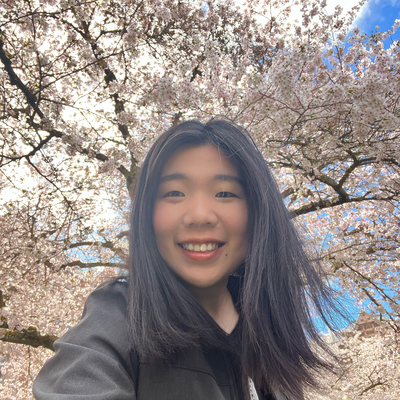

Overview: Today's robot learning pipelines can produce capable policies, yet many of these policies remain largely static after deployment, which limits their ability to improve from continued physical interaction. Recent advances in foundation models have strengthened zero-shot execution, but real-world deployment also produces a steady stream of interaction data that is rarely converted into new learning signals. Broader adaptability therefore requires systems to move beyond open-loop execution and support continuous self-improvement. A central challenge is to allow a robot to reflect on its own physical execution by analyzing multimodal traces or using spatial world models to understand why a trajectory diverged from the intended goal, then converting that understanding into safe policy updates. At present, the community lacks shared frameworks for this reflective loop, which makes it difficult to generate learning signals from physical interaction, refine policies without manual relabeling, and evaluate progress toward continuous self-improvement.
Self-Improving Robot Learning Through Experience and Reflection (STEAR) centers the workshop on this closed-loop learning challenge. The workshop asks how a system should detect suboptimal execution on its own, what compact multimodal record is needed for accurate scene replay, and how foundation models can be used to produce physically grounded reflections from deployment experience for fast adaptation. A key focus is how these reflections can be translated into verified policy updates through self-guided exploration while reducing the risk of catastrophic forgetting. The ultimate goal is to equip robotic systems with the ability to autonomously critique their own execution, generate targeted self-feedback, and iteratively refine their policies in the wild.
Boris Ivanovic
NVIDIA Research
Closed-loop autonomy, reasoning labels, foundation models for physical AI

Yi Ru (Helen) Wang
University of Washington
Evaluation, representation, and reasoning for robot manipulation
Changliu Liu
Carnegie Mellon University
Safe robot interaction, motion planning, control
All times are relative to the workshop start. The exact date and time are TBD.
| Time | Main program |
|---|---|
| 00:00–00:05 | Opening and challenge setup |
| 00:05–00:50 | Invited Talk 1 (40 + 5 min) |
| 00:50–01:35 | Invited Talk 2 (40 + 5 min) |
| 01:35–01:50 | Break and poster session opens |
| 01:50–02:35 | Invited Talk 3 (40 + 5 min) |
| 02:35–03:20 | Invited Talk 4 (40 + 5 min) |
| 03:20–03:30 | Live Demo 1 (8 + 2 min) |
| 03:30–03:40 | Live Demo 2 (8 + 2 min) |
| 03:40–03:50 | Live Demo 3 (8 + 2 min) |
| 03:50–04:00 | Awards and closing synthesis |
Posters will remain available from 01:35 to 04:00, allowing attendees to discuss contributed work during the break and demo transitions without displacing the invited talks.
We will solicit non-archival extended abstracts of up to 4 pages, excluding references, in the CoRL format.
Submissions should address self-improving robot learning from physical experience, with emphasis on execution
traces, scene replay, causal reflection, auto-labeling, safe planning, and verified policy adaptation.
We welcome in-progress work, negative or surprising results, system papers with video demonstrations, and
position papers that propose evaluation protocols or benchmarks for policy improvement from real robot experience.
Accepted papers will not be published in proceedings, allowing the workshop to support early ideas and follow-up
submissions.
Submissions will be handled through OpenReview using a double-blind process.